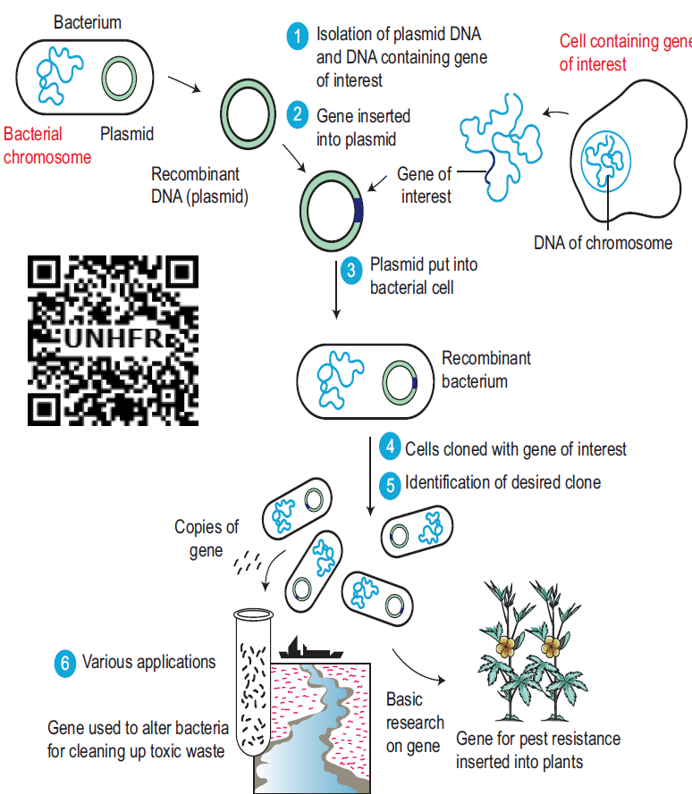

Modern biotechnology embraces all the genetic manipulations, protoplasmic fusion techniques and the improvements made in the old biotechnological processes. Some of the major advancements in modern biotechnology are described below.
Genetic engineering or recombinant DNA technology or gene cloning is a collective term that includes different experimental protocols resulting in the modification and transfer of DNA from one organism to another.
The definition for conventional recombination was already given in Unit II. Conventional recombination involves exchange or recombination of genes between homologous chromosomes during meiosis. Recombination carried out artificially using modern technology is called recombinant DNA technology OPEN BRACKET r-DNA technology CLOSE BRACKET. It is also known as gene manipulation technique.
This technique involves the transfer of DNA coding for a specific gene from one organism into another organism using specific agents like vectors or using instruments like electroporation, gene gun, liposome mediated, chemical mediated transfers and microinjection.

Figure 4.3: Steps involved in r-DNA Technology